Three designed feature images in Duometry’s citron, charcoal and warm white palette. Select an image to download the full-resolution PNG. Unframed app screens follow below.


Press kit
Made for Duo. Fun on any phone.
A game of angles, memory and feel. Match a target by folding iPhone Duo, or shape your guess with a slider on other iPhones. Play solo, pass the phone to friends, take on a Daily challenge on Duo or explore angles in Free Measure.
Three designed feature images in Duometry’s citron, charcoal and warm white palette. Select an image to download the full-resolution PNG. Unframed app screens follow below.
Made for Duo. Fun on any phone.
How close can you get to an angle? Duometry turns that simple question into a game of feel, memory and precision.
On iPhone Duo, read a target number and match it by folding the phone. In Solo and Play Together, the target stays visible while your live hinge reading stays hidden. Trust your hands, then hold anywhere in the play area to lock in, or use the Lock in button. The reveal shows your angle, the difference and your score.
On an iPhone without hinge input, match a target number by adjusting an angle with a slider. The target stays visible, but your guess stays unlabelled until the reveal. Choose a simple angle drawing or a Duo illustration.
Play five or ten rounds on your own, or pass one phone between two to eight players. Each player takes a private turn at the same target. Once everyone has locked in, compare the guesses and see the round winner and overall standings. A perfect match earns 100 points; every degree of error costs a point.
Daily on Duo gives you three date-defined angles. Daily Fold asks you to remember a number; By Eye asks you to remember an opening. When you are ready, the target disappears and you fold from memory. Complete challenges to fill your weekly progress. Your first official result is saved, and you can practice again without changing it. Daily attempts resume after you quit the app.
Duometry works offline. No account is needed, and there are no analytics or online multiplayer. Completed solo history, Daily progress and preferences stay on your device. Active Solo and Together games are not restored after quitting.
Try the Duometry beta on TestFlight: https://testflight.apple.com/join/PUm89hu7
Für Duo gemacht. Auf jedem iPhone ein Spiel.
Wie gut kannst du einen Winkel treffen? Duometry macht aus dieser einfachen Frage ein Spiel mit Fingerspitzengefühl, Gedächtnis und Präzision.
Auf dem iPhone Duo gibt eine Zahl den Zielwinkel vor. Versuche, ihn durch Falten des Geräts zu treffen. In Solo und im Mehrspielermodus bleibt das Ziel sichtbar, dein aktueller Scharnierwinkel dagegen verborgen. Vertraue deinen Händen und halte den Finger im Spielbereich gedrückt oder bestätige mit der Taste „Lock in“. Die Auflösung zeigt deinen Winkel, die Abweichung und deine Punkte.
Auf einem iPhone ohne Scharniereingabe spielst du „Guess the Angle“: Eine Zahl gibt den Zielwinkel vor, einen Schieberegler stellst du nach Augenmaß ein. Das Ziel bleibt sichtbar, dein geschätzter Winkel wird erst bei der Auflösung angezeigt. Wähle zwischen einer einfachen Winkelzeichnung und einer Duo-Illustration.
Spiele allein fünf oder zehn Runden oder gib ein iPhone in einer Gruppe von zwei bis acht Personen weiter. Alle versuchen nacheinander, denselben Winkel zu treffen. Die Tipps bleiben geheim, bis alle bestätigt haben. Dann werden die Winkel verglichen, der Rundensieger und die Gesamtplatzierungen angezeigt. Ein perfekter Treffer bringt 100 Punkte; jeder Grad Abweichung kostet einen Punkt.
Die Tagesaufgabe auf dem Duo besteht aus drei für das jeweilige Datum festgelegten Winkeln. Bei „Daily Fold“ merkst du dir eine Zahl, bei „By Eye“ eine Öffnung. Sobald du bereit bist, verschwindet das Ziel und du faltest aus dem Gedächtnis. Abgeschlossene Aufgaben füllen deine Wochenübersicht. Das erste offizielle Ergebnis bleibt gespeichert; weitere Übungsversuche ändern es nicht. Begonnene Tagesaufgaben lassen sich nach dem Beenden der App fortsetzen.
Duometry funktioniert offline und benötigt kein Konto. Es gibt keine Analysefunktionen und keinen Online-Mehrspielermodus. Abgeschlossene Solospiele, Tagesfortschritt und Einstellungen werden lokal gespeichert. Laufende Solo- und Mehrspielerrunden werden nach dem Beenden der App nicht wiederhergestellt.
Duometry als Beta mit TestFlight testen: https://testflight.apple.com/join/PUm89hu7
Select the icon to download the original full-resolution PNG.
Home, Solo, Daily By Eye and Free Measure, captured on the iPhone Duo simulator with sample hinge input. Select an image to download the original, uncropped PNG.
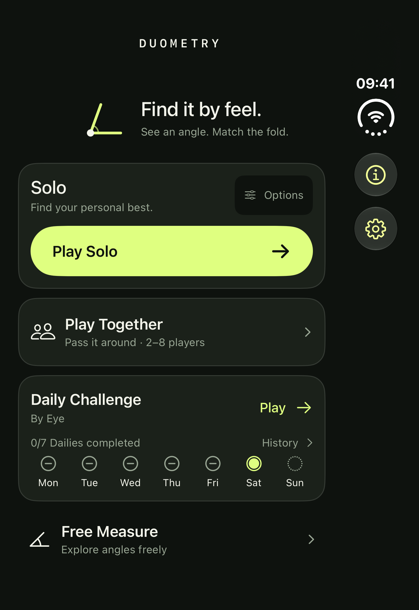
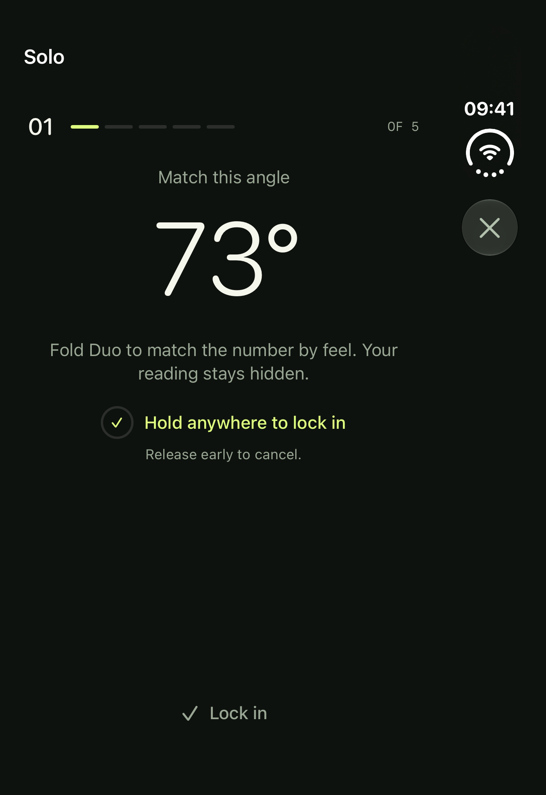
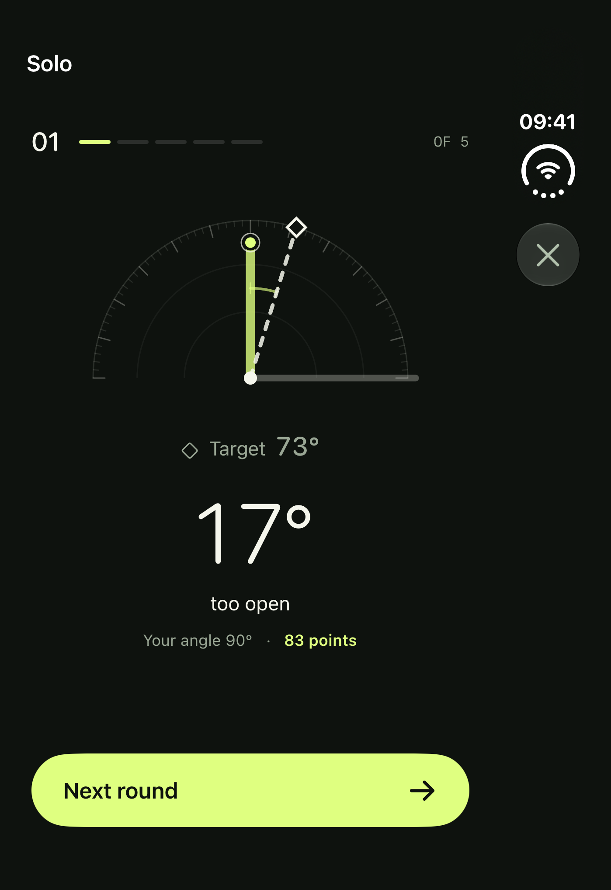
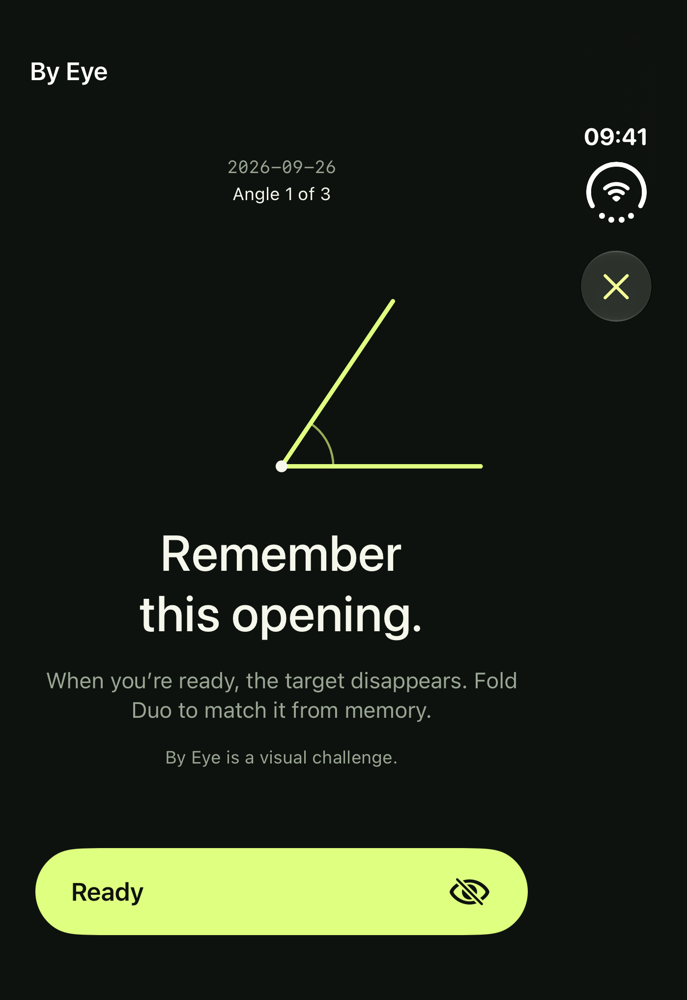
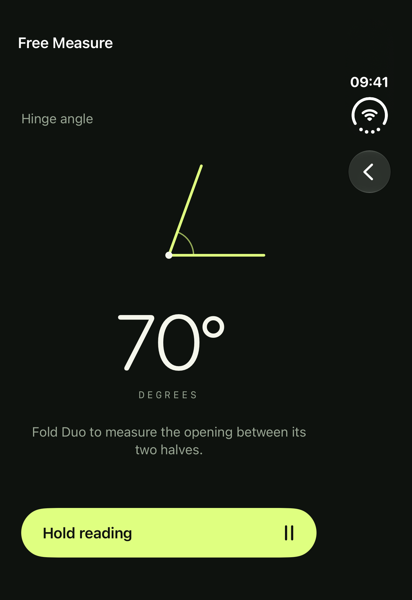
Home, Solo, Daily By Eye and Free Measure, captured on the iPhone Duo simulator with sample hinge input. Select an image to download the original, uncropped PNG.
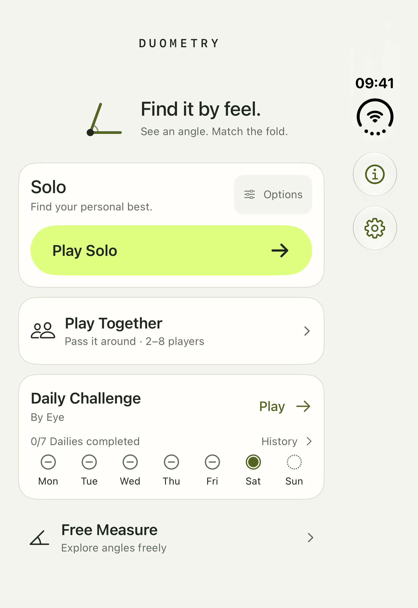
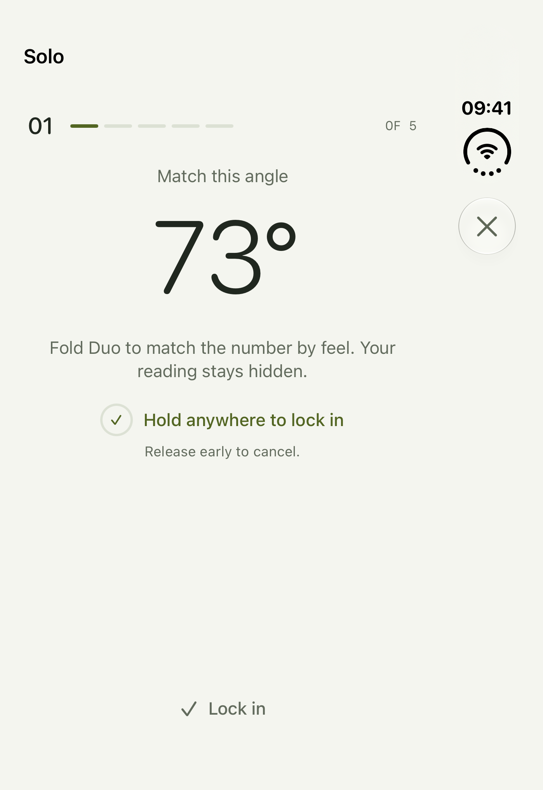
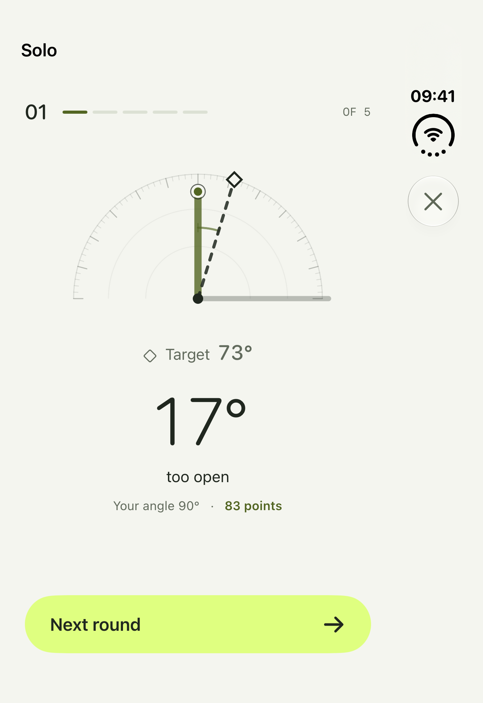
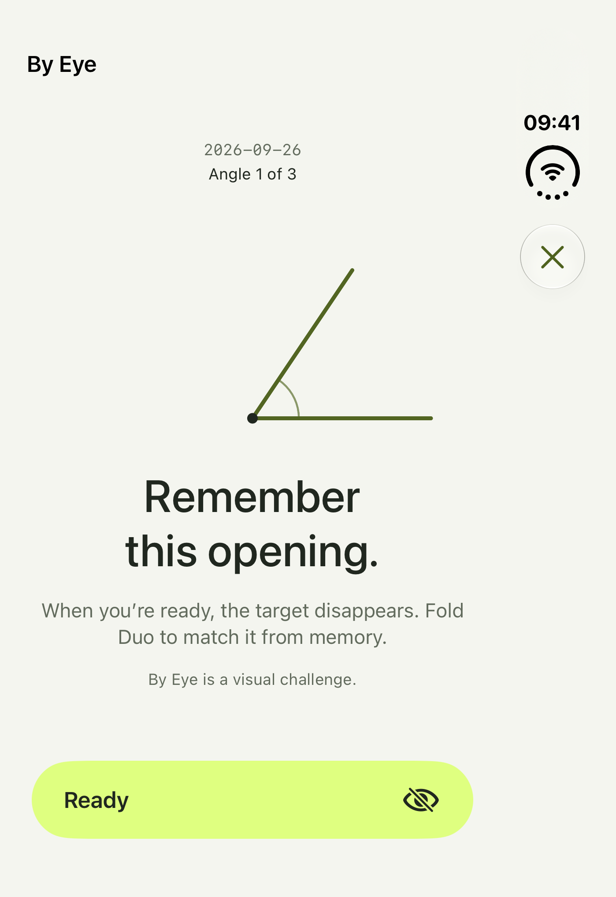
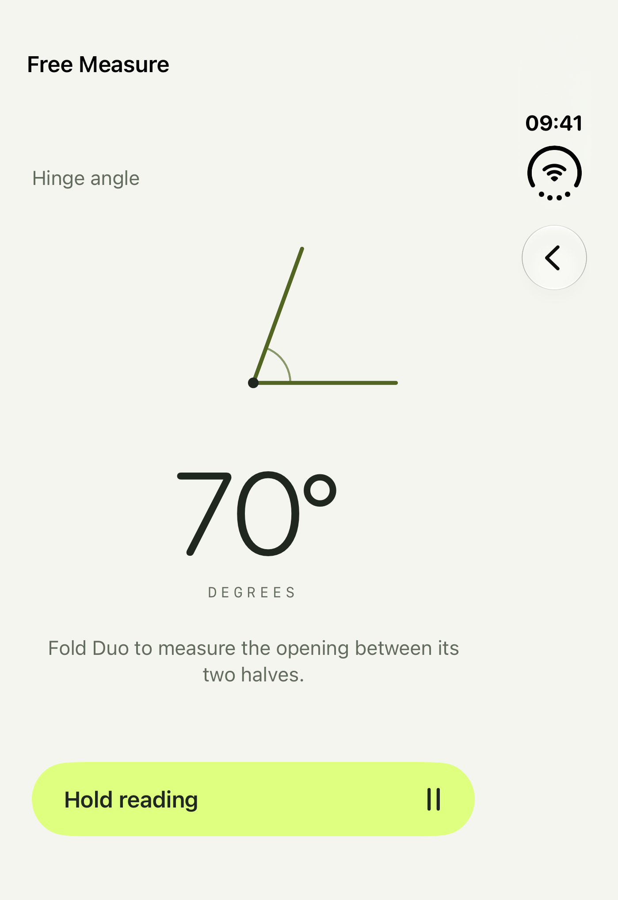
Solo, multiplayer and Free Measure, captured on iPhone 18 Pro with the production slider game. Select an image to download the original, uncropped PNG.
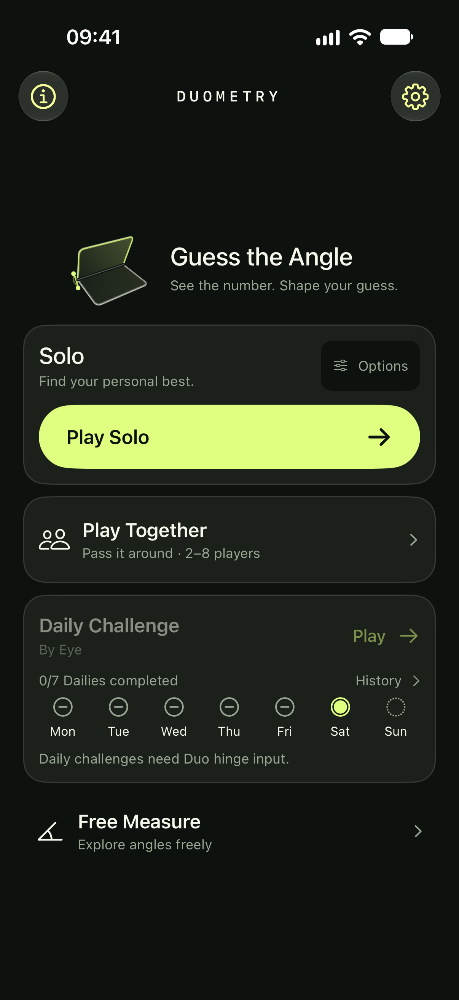
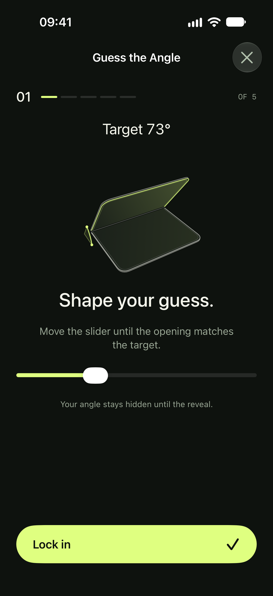
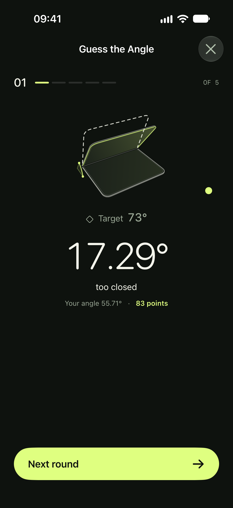
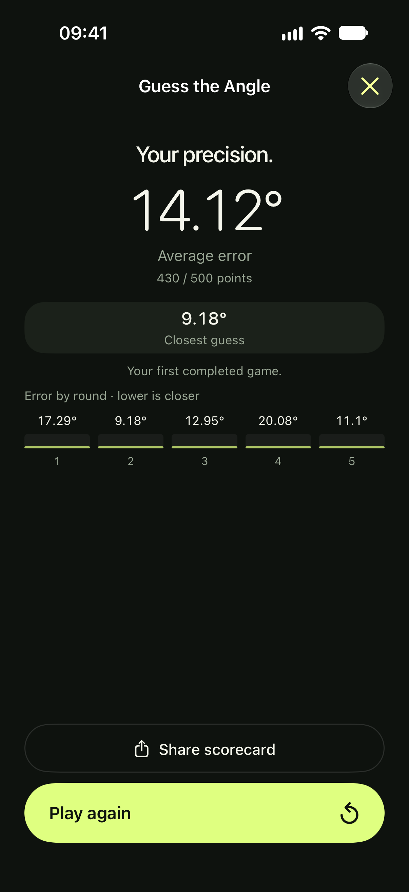
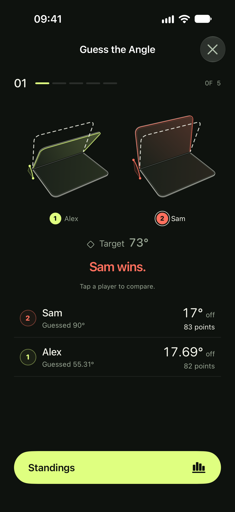
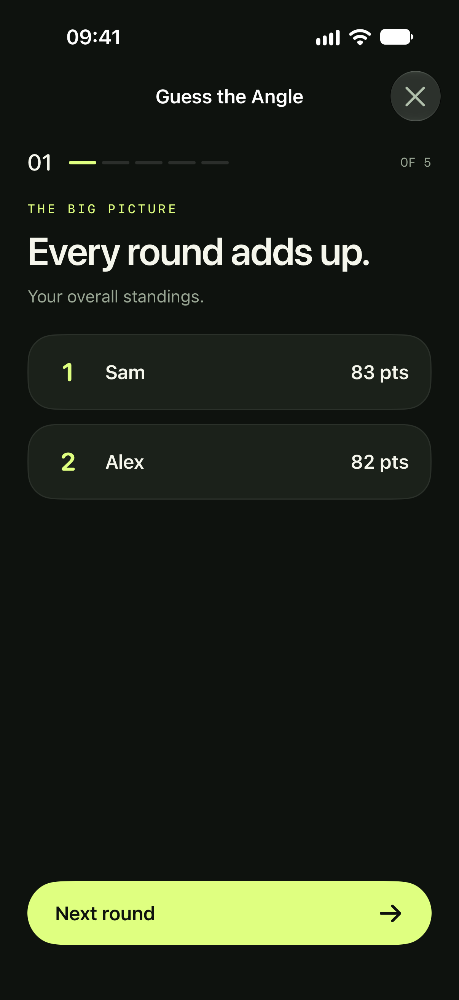
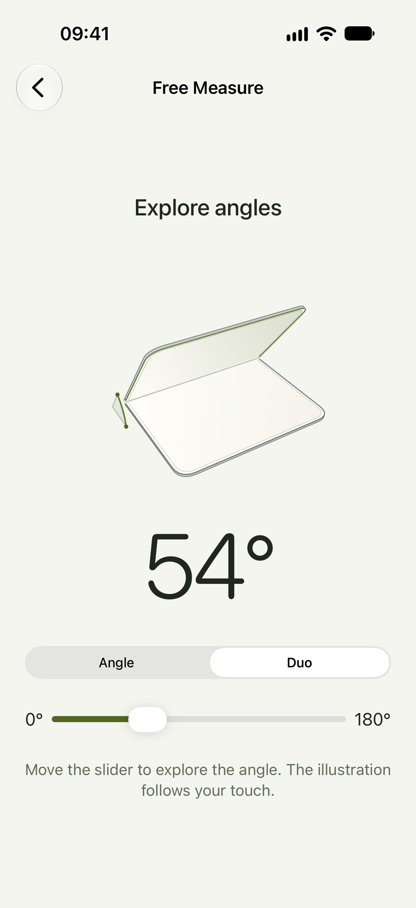
A captioned tour of solo play, pass-and-play, scorecards, Free Measure and the Duo experience. This video shows an earlier interface; use the screenshots above for the current design. Recorded in the iPhone and Duo simulators. No audio.
The score-history comparison and hold-to-lock clips use simulated hinge input. The live-hinge segment uses the Duo simulator’s system input.
Try Duometry
Join the Duometry beta on TestFlight and try it for yourself. For press questions, get in touch.